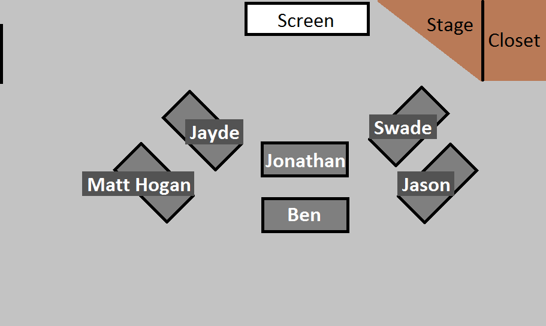

class: center <div id="seating-chart" style="width: 100%;">  </div> --- class: center, middle # Unit 2 ## Web Fundamentals --- class: center, middle # [Class 3](https://education.launchcode.org/web-fundamentals/class-prep/3/) Lecture --- class: center, middle ## No Studio Solution Today --- ### Topics - HTTP - Creating a Web App with Flask --- <!-- TODO --> ### HTTP --- <!-- TODO --> ### Flask --- ### Graded Exercise: [HTML-Me-Something](https://education.launchcode.org/web-fundamentals/assignments/html-me-something/) - Get started on this now - Due Monday, January 14 - Examples: - (Places I've Lived)[https://education.launchcode.org/html-me-something/submissions/chrisbay/index-nocss.html] - (My Favorite Animals)[https://aleesham.github.io/html-me-something/] - (Kurti and the Hursti Boys)[https://ryanadroll.github.io/html-me-something/merch.html] --- class: center, middle # Q&A --- class: center, middle <!-- TODO --> ## Studio Walkthrough ### [Flicklist 1](https://education.launchcode.org/web-fundamentals/studios/flicklist/1/) --- <!-- TODO --> ### Studio Walkthrough